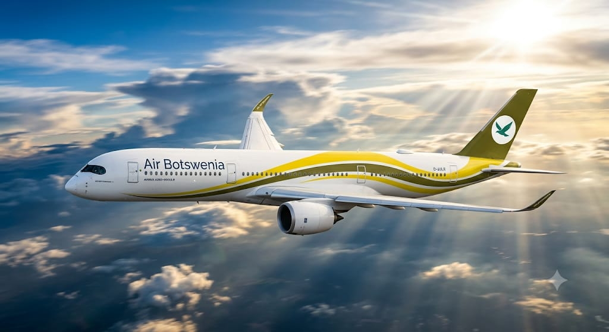

Aviation is an important part of the transportation infrastructure and economic development of the Federal Republic of Botswenia. The country operates an extensive aviation network connecting domestic and international destinations through passenger, cargo and military aviation services.
Botswenia invests approximately 7% of its GDP in the airline sector, supporting aviation infrastructure, airline operations and the development of air transport.
The first commercial aircraft service in Botswenia was introduced on 12 February 1982. The inaugural flight operated between Kworsau (គ្វរសៅ) and Mangdel (ម៉ាងឌេល), covering a distance of 68 km.
The aircraft carried 26 passengers and was operated by a crew of three members. This historic service marked the beginning of commercial air transportation in Botswenia.
Established: 2005
Established: 2008
Established: 2012
Established: 2013
Established: 2021
25 airports
More than 450 airports
Domestic and international passenger flights.
Dedicated cargo aircraft and freight transportation.
Military aircraft and aviation operations.
Air connectivity between destinations within Botswenia.
Air connectivity between Botswenia and other countries.

In the upcoming website, we will explore the aviation sector of Botswenia in greater detail, including its airlines, airports, aircraft fleet, cargo operations, aviation authorities and international connectivity.
Stay tuned for a comprehensive overview of Botswenia's aviation industry.